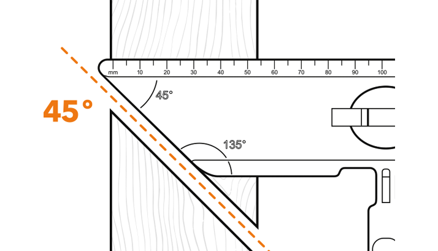

by Electric Ian's®
T-Spirit®, the revolutionary
multipurpose 2-way
spirit level



Regular spirit levels can be used by anybody. However, the limited use of a regular spirit level means that they're only ever used by professionals. The T-Spirit® Level can easily be used by anybody, whether it be those with limited trades experience or professionals.
The magnetic infrastructure of the T-Spirit® Level is key to returning the perfect level of adjustment when needed. Spirit Levels are regularly used on metallic surfaces and it only makes sense for magnets to be present.
Yes, the T design assists in this. You only need a small section to the level of a large object. Regular spirit levels do not work this way, hence you sometimes have to use larger ones - with T Spirit, one size fits all.
Extremely durable. It's built for the building trade, and we know how tools are treated (we're in the trade after all). The product is made of a mixture of Plastic and a hardening material to ensure excellent durability.
With over 30 years of electrical and building experience. We designed and developed the T-Spirit® with thought.
We made sure that T-Spirit® contained all that is needed for any trades person or individual to use successfully with pleasure.
6
Key Features
To place your order, please check out below with PayPal. A £3.50 post and packaging fee will be added to the order.
Making a grand total of £23.49.